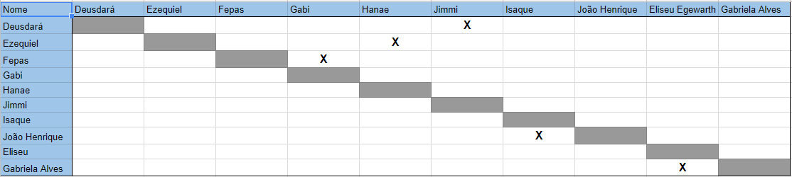
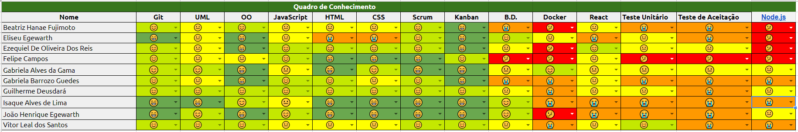
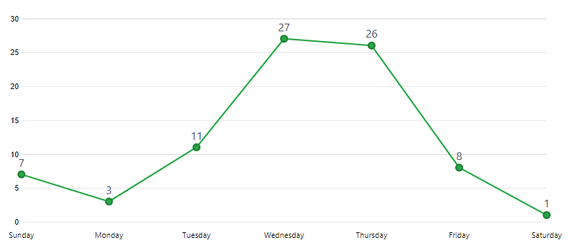

Sprint 3
Duração
Data início: 01/04/2018Data término: 07/03/2018
Duração: 7 dias
Objetivos
- Aumentar o conhecimento da equipe sobre o projeto;- Diminuir o risco de baixa produção da equipe;
- Aumentar a interação dos membros.
Sprint Backlog
#30 Criar RoadmapRefatorar fishbone #134
Reunião com Designer do Lappis #131
Reunião com o cliente #132
Refatorar documento de arquitetura #130
Refatorar documento de visão #129
Criar documentação para API #126
Treinamento de Arquitetura Microservice #124
Aplicar o GitHub Pages #123
Planejar reunião #122
Refatorar modelagem da Arquitetura #121
Refatorar travis #120
Organizar pasta docs #118
Atualizar planilha EVM #117
Criar Style Guide do projeto #111
Reunião com Colaboradores externos #95
Automatizar teste coverage #81
Visualizar usuário gestor #69
Criar usuário gestor #60
Criar product backlog #135
Refatorar Roadmap #133
Visualizar médicos #125
Visualizar perfil #119
Documentar sprint 3 #116
Implementar uma solução de API Gateway #115
Criar sessão de login #114
Criar sessão de login #9
Criar Docker React-Native #87
Mapa de Requisitos #93
Papéis
- Product Owner: João Egewarth
- Scrum Master: Isaque Alves
- DevOps: Eliseu Egewarth
- Arquitetura: Gabriela Alves
- Desenvolvedores: Beatriz Hanae, Ezequiel De Oliveira, Felipe Campos, Gabriela Guedes, Guilherme Deusdará, Vitor Leal.
Pareamento
Pontos
Planejados:
- 32 PontosAdicionados:
Débito Técnico:- 13 pontos
Viabilidade Técnica:
- 10 ponto.
Executados:
- 45 pontosBurndown
O burndowm da sprint pode ser encontrado aqui.Revisão
Duração: 1 hora.Nesta revisão foram apresentados todos os artefatos produzidos durante a sprint. Além disso foi definido qual grupo deveria flexibilizar os testes para esta sprint considerando a curva de aprendizagem.
Dívidas Técnicas
Criar Docker React-Native #87As dificuldades encontradas para implementar o docker para a o React Native levou o time a buscar soluções no Stackoverflow, na comunidade de Docker e React Native do Telegram, sem obter sucesso.
Retrospectiva
Duração: 20 minutos.Pontos positivos
- Avanço na tecnologia necessária.- Melhor visibilidade do código.
- Aplicação de intervenções por meio de coaches.
- Foi verificado a aprendizagem de API sem o intermédio de treinamentos.
- Houve maior auxílio no projeto por parte de colaboradores externos.
- Foi feito Esclarecimento junto ao cliente.
- Maior comunicação entre os times.
Pontos Negativos
- Início tardio.- Dificuldade com testes.
- Baixa cobertura de testes.
- Erros de planejamento na arquitetura.
- Falta de dedicação de alguns membros.
- Dificuldades com a nova API.
- Falta de maior planejamento das atividades.
- Comunicação entre os membros do times.
Quadro de conhecimento
Frequência de commits
Desempenho
Riscos
Risco |
Ação Preventiva |
Ação Reativa |
Refatorar a API |
Definir corretamente o escopo e as necessidades do produto, para em seguida começar o a definição da aruqitetura. |
Iniciar o quanto antes para evitar impáctos maiores ao projeto. |
API e Front não estão ligados |
Produção com soncronia entre API e front |
Fazer o Barramento de serviços |
Não entregar o produto na R1 |
Planejar corretamente as atividades |
Aumentar o ritmo de produção, a qualidade e o conhecimento da equipe. |
Os calculos e os gráficos de burndown dos riscos podem ser encontrados aqui!
Feedback
Para reduzir as dificuldades na interação do time e para melhorar o nível de conhecimento, foi definido coachs de EPS para manter uma maior comunicação e disseminar melhor o conhecimento entre o time de MDS.
Houve alteração positiva no quadro de conhecimento, pois os coaches conseguiram transmitir melhor o conhecimento e possibilitaram uma maior integração entre os membros da equipe, uma vez que somente o scrum master estava executando estes papéis.
Devido os problemas das reuniões passadas, nas quais o time perdia o foco e excedia o tempo máximo previamente organizados para os ritos foi necessário um planejamento da equipe de gerência para entender causa desta desorganização durante as reuniões. Foi necessário reduzir o tamanho e a duração de todos os ritos com estas ações o time obteve melhorias na finalização da reunião da sprint 3 e no planejamento da sprint 4. Além disso outra decisão importante para a próxima sprint é verificar uma forma melhor aproveitamento das horas que vêm sendo documentadas. Uma vez que a pontuação do time é baseada em horas onde cada ponto representa o seu dobro em tempo, por exemplo: 1 ponto equivale a 2 horas de trabalho, acreditamos que isso pode auxiliar a tornar mais efetiva a pontuação do time.
Ainda existe por parte do time a consulta de resoluções de dúvidas em comunidades e com os colaboradores técnicos disponíveis na FGA. Persiste também a dificuldade do time em dividir as tarefas corretamente para facilitar o trabalho durante a sprint, mas como tem sido mantida a frequência de commits sendo assim não se percebe que as ações têm sido postergadas para última hora como era feito nas nas sprints anteriores. Além disso, nesta sprint foi definido o pareamento entre os integrantes de EPS para aprimorar ainda mais o conhecimento e melhor distribuir as tarefas.
Um dos maiores riscos do projeto foi levantado nessa sprint, a necessidade de refatorar a API para adequart corretamente ao escopo e necessidades do projeto. A ação reativa do risco foi aplicada e acredita-se quem em 2 sprints seja finalizada.